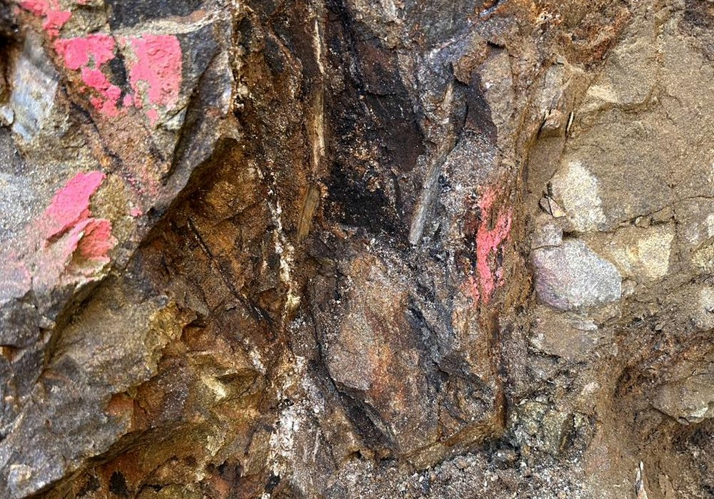
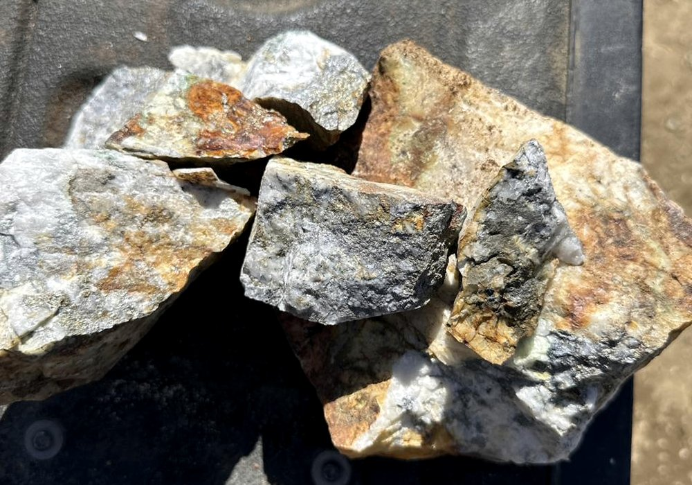

The Prunty Mine is located on patented mining claims in the Charleston Mining District of northern Elko County, Nevada. The property includes the Prunty Mine and Slattery vein workings, with the Black Warrior Mine nearby. Humboldt Mining Company is advancing a phased program of portal access, selective excavation, sampling, metallurgical evaluation, and ore marketing.
| Operator | Humboldt Mining Company, LLC |
| Project | Prunty Mine |
| District | Charleston Mining District |
| County · State | Elko County, Nevada |
| Land Tenure | Patented mining claims (Virginia and Vanity Fair) within a broader claim group |
| Commodities | Gold, silver, antimony (historic copper) |
| MSHA Mine ID | 26-01261 |
| NDEP Water Pollution Control Permit | NEV2011104 |
| Historical Production | Small intermittent production since 1905 |
| Current Stage | Sampling, portal evaluation, selective excavation, ore marketing |
The Charleston Mining District covers the mountainous portion of northern Elko County between Jarbidge and Charleston. Placer gold was discovered on Seventy-Six Creek in 1876. The Prunty, Slattery, and Black Warrior lode deposits on the south and east flanks of the Copper Mountains were discovered and worked in the early 1900s.
The oldest units in the project area are Late Proterozoic to Cambrian quartzite, siltstone, conglomerate, limestone, dolomite, and phyllite, overlain by Paleozoic sediments of the Golconda Terrane and intruded by Jurassic intrusives accompanied by late-stage quartz veining. A 2011 ground magnetic survey interpreted an intrusive at the Prunty Mine plunging southeast, and identified an associated structural trend that controls much of the district's mineralization.


Historical reports describe the Prunty vein as emplaced in a contact zone between an intrusive dike and slates. Primary sulfides include stibnite, arsenopyrite, pyrite, tetrahedrite, chalcopyrite, galena, sphalerite, and chalcocite hosted in quartz and calcite, indicating higher-temperature mineralizing fluids than typical for Nevada gold deposits.
Vein widths in observed workings range on the order of 20 to 50 centimeters, with locally wider mineralized zones. Detailed vein and structural information is available to qualified parties under confidentiality.
Placer gold discovered on Seventy-Six Creek; the district is organized.
Prunty Mine worked intermittently. Ore treated in a hydraulic five-stamp mill. Small intermittent production of gold, silver, copper, and antimony.
Contract miner drove several hundred feet of additional workings.
Remington and Tenneco drilling on the broader claim group. Multiple intercepts of anomalous gold reported in historic records.
Humboldt Mining diamond core program near the Black Warrior Mine.
Ground magnetic survey and historical NI 43-101 technical report (now out of date for current reporting purposes).
Underground mapping, 3D vein and drift modeling, channel sampling, and metallurgical testing on selected samples.
NDEP-BMRR compliance inspection — no items of concern.
Active portal work, surface vein exposure, independent assay verification, antimony verification program, and ore-marketing pathway.
Antimony is classified as a critical mineral by the U.S. Department of the Interior and is essential to the defense industrial base, with applications in ammunition, infrared sensors, flame retardants, and lead-acid batteries. The United States has not produced mined antimony domestically since the early 1990s, yet annual demand is estimated at 30,000–40,000 tonnes. Following China’s 2024 export restrictions, antimony prices rose approximately five-fold from pre-2024 levels. The Department of Defense has committed approximately $397 million in investments and stockpile contracts to address the shortfall, and no domestic mine is expected to produce antimony before late 2028.
The Prunty Mine has a documented historic antimony occurrence. The Charleston Mining District produced small quantities of antimony alongside gold, silver, and copper from the early 1900s. Stibnite (antimony sulfide) is identified as a primary sulfide in the Prunty vein system by multiple independent technical reports, alongside arsenopyrite, pyrite, tetrahedrite, chalcopyrite, galena, sphalerite, and chalcocite in quartz and calcite gangue.
Full-element laboratory analysis of vein material from the underground workings has returned elevated antimony values, and the mineral assemblage is consistent with higher-temperature mineralizing fluids that can concentrate antimony in structurally favorable zones. Specific analytical values and sample-level detail are available to qualified parties under confidentiality.
| Historic antimony production | Documented (gold, silver, copper, and antimony produced from the early 1900s) |
| Stibnite in vein mineralogy | Confirmed by multiple independent technical reports |
| Analytical confirmation | Elevated antimony returned in full-element laboratory analyses of vein material |
| Systematic Sb-focused sampling | Not yet completed — planned as part of a verification program |
| Antimony metallurgical testwork | Not yet conducted |
| Antimony resource estimate | None — additional work required |
Humboldt Mining has identified a focused verification program to determine whether the documented antimony occurrence has economic significance. This work leverages existing underground access and surface vein exposures already established for the gold program, and includes systematic channel sampling with antimony-specific assay suites, width-weighted grade compilation, and a desktop evaluation of antimony processing pathways.
The verification program is designed to resolve the antimony potential into one of three categories:
| Weak | Scattered anomalous antimony with no coherent mineable widths. Gold remains the sole commodity focus. |
| Useful co-product | Gold veins containing recoverable antimony in selected zones, adding value to ore shipments and potentially attracting defense supply-chain interest. |
| Strategic standalone target | Continuous stibnite-rich structures capable of supporting a dedicated antimony resource and processing route. |
Important note. No mineral resource or reserve has been estimated for antimony at the Prunty Mine. The antimony data referenced above is from selected grab and channel samples representative only of the specific material submitted for analysis. Individual high-grade values should not be interpreted as representative of bulk or run-of-mine grade. Additional systematic sampling, structural mapping, width-weighted grade compilation, and metallurgical evaluation are required before any antimony resource or production scenario can be assessed.